stateDiagram-v2
RESET --> SCAN
SCAN --> CHECK: scan_done
SCAN --> SCAN: !scan_done
CHECK --> SAVE: one-hot keypad
CHECK --> SCAN: else
SAVE --> SETTLE
SETTLE --> WAIT
WAIT --> SCAN: saved column released
WAIT --> PULSE: db_done
WAIT --> WAIT: held and !db_done
PULSE --> PRESSED
PRESSED --> PRESSED: saved column low
PRESSED --> SCAN: saved column released
Lab 3: Keypad Scanner
lab reports
Synchronous keypad scanning, debouncing, multi-key handling, and two-digit display.
Introduction
Lab 3 extends the Lab 2 keypad scanner into a complete keypad interface. The FPGA scans a 4x4 keypad, synchronizes the asynchronous column inputs, rejects switch bounce and invalid multi-key conditions, and displays the two most recent valid hexadecimal keys on the dual 7-segment display. Each valid press is registered once regardless of hold time.
The complete SystemVerilog source and testbenches are available in the Lab 3 GitHub repository.
Hardware
The design reuses the 4x4 keypad interface and dual 7-segment display hardware from Lab 2. Keypad columns are active-low asynchronous FPGA inputs, while the row-driving and display-multiplexing hardware are reused from the previous lab.
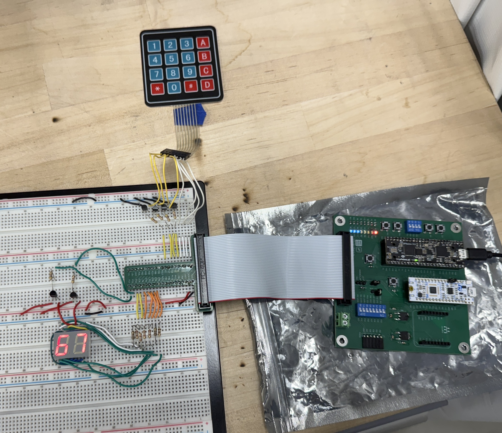
Verilog Structure and Style
The top-level module contains only module instantiations and simple combinational connections. Previously verified Lab 1/2 modules are reused for the hexadecimal decoder and parameterized counters.
| Module | Function |
|---|---|
lab3_ta_sync |
Two-flop synchronization of the four asynchronous keypad columns |
lab3_ta_scanner |
Reused counter plus combinational logic to scan the four keypad rows |
lab3_ta_keypad_builder |
Captures each scanned row into a 16-bit keypad map |
lab3_ta_keypad_decoder |
Converts a one-hot keypad map into row, column, and hexadecimal values |
lab3_ta_controller |
Coordinates scanning, debounce timing, registration, and key release |
lab3_ta_savedkey_sr |
Stores the row and column of the candidate key |
lab3_ta_digit_sr |
Stores the newest and previous hexadecimal digits |
Debouncing and Multi-Key Handling
After a complete scan, the controller accepts a candidate only when $onehot(keypad) is true. The selected row is then held active while the two-stage synchronizer settles. A reused counter requires the saved column to remain asserted for approximately 10 ms before generating a one-cycle shift_enable pulse.
Once a key is registered, the controller remains in PRESSED until that saved key is released. Additional keys are therefore ignored while the first key remains held. If several keys are detected during scanning, no key is saved; when the condition returns to exactly one held key, that remaining key can be registered.
This counter-based debounce is simple and deterministic. Its main tradeoff is a small fixed input delay. This delay of 10ms is excessive compared to oscilliscope measure debounce, but accounts for worst case scenarios.
FSM Partitioning
The controller handles sequencing, while the scanner and debounce counter keep their own timing state and communicate with the controller using scan_done, db_done, reset, and enable signals. This keeps new state out of the top-level module and allows each stateful block to be tested independently.
State Transition Diagram
State Transition Table
| State | Next-state condition | Main asserted outputs |
|---|---|---|
SCAN |
scan_done -> CHECK; otherwise SCAN |
scan_enable, scan_reset |
CHECK |
one-hot keypad -> SAVE; otherwise SCAN |
save_enable for a valid one-hot key |
SAVE |
always -> SETTLE |
none |
SETTLE |
always -> WAIT |
none |
WAIT |
released -> SCAN; db_done -> PULSE; otherwise WAIT |
db_reset, db_enable |
PULSE |
always -> PRESSED |
shift_enable |
PRESSED |
released -> SCAN; otherwise PRESSED |
none |
Simulation and Verification
Every new module is covered by an automatic testbench. The previously verified generic counter and hexadecimal decoder are reused from Lab 2 and Lab 1, respectively, so their standalone simulations are not repeated.
The top-level keypad stimulus models active-low columns, asynchronous press timing, a transition directly on a system-clock edge, and switch bounce.
Synchronizer
The waveform shows the two-stage delay: an asynchronous change first reaches the internal first-stage register and then appears at q on the following rising edge.
Synchronizer testbench waveform
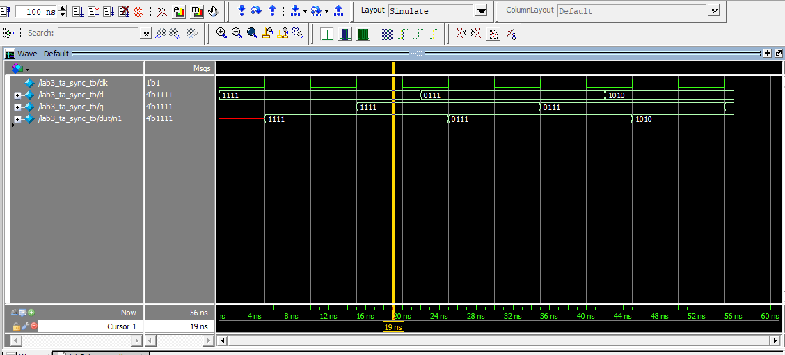
Keypad Scanner
The scanner testbench verifies the 1000 -> 0100 -> 0010 -> 0001 row sequence, matching row indices, scan ticks, wraparound, and enable behavior.
Scanner testbench waveform
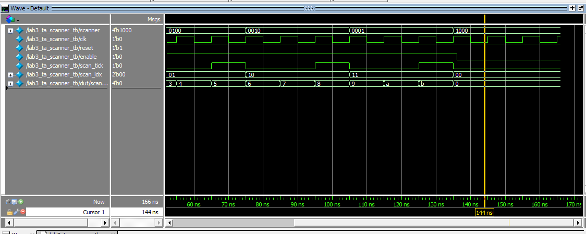
Keypad Builder
Each scan tick stores the inverted synchronized columns into the correct four-bit portion of the 16-bit keypad map. The waveform builds 16'h8000 -> 16'h8400 -> 16'h8420 -> 16'h8421, with scan_done asserted on the final row.
Keypad-builder testbench waveform
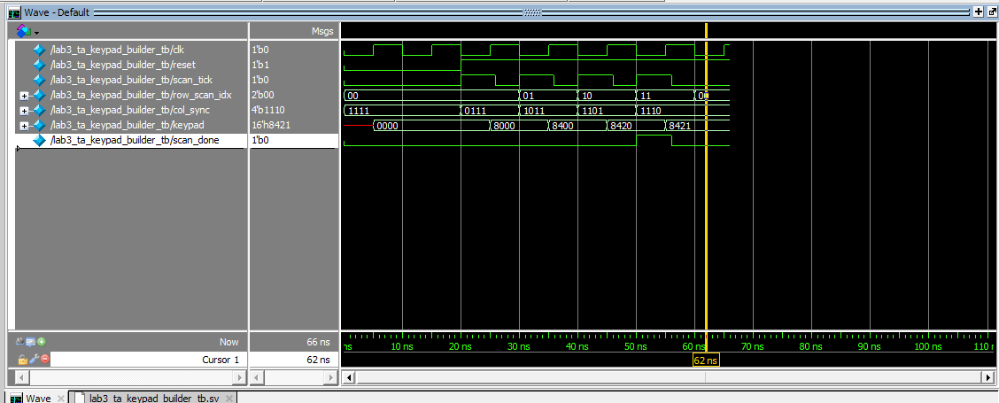
Keypad Decoder
The combinational decoder testbench steps through all 16 one-hot keypad positions and verifies the corresponding hexadecimal, row, and column outputs.
Keypad-decoder testbench waveform
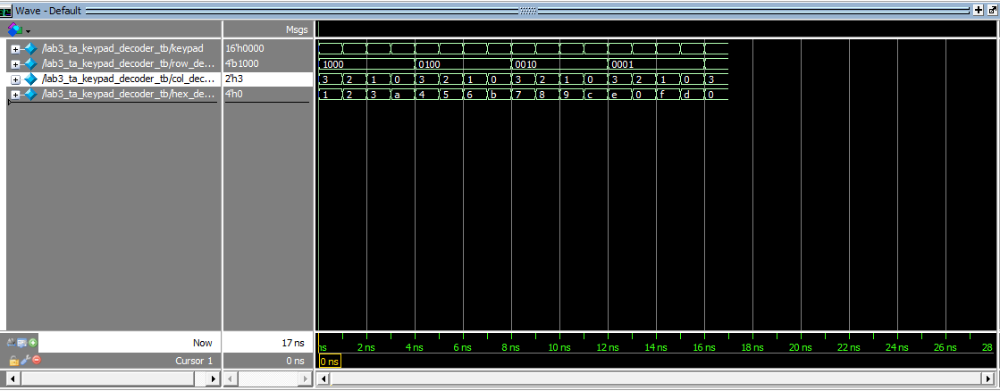
Saved-Key Register
The saved-key register captures the decoded row and column only when enabled and holds its previous value while disabled.
Saved-key register testbench waveform
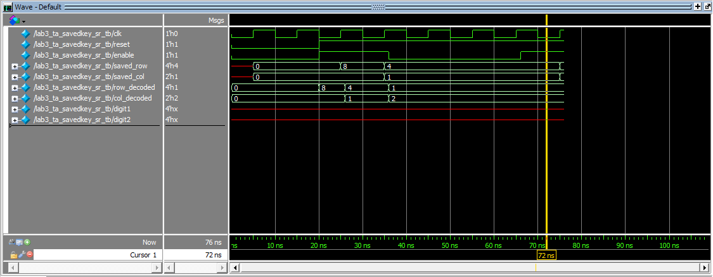
Digit Shift Register
The display register resets to 00, loads A, shifts to 5A, holds while disabled, and then shifts to C5.
Digit shift-register testbench waveform
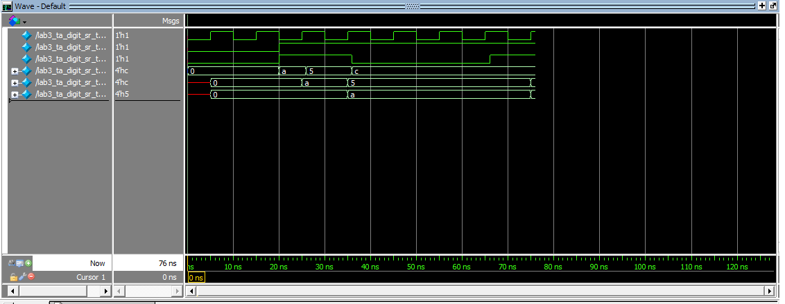
Controller FSM
The controller waveform covers asynchronous reset, rejection of a multi-key map, a valid SCAN -> CHECK -> SAVE -> SETTLE -> WAIT -> PULSE -> PRESSED sequence, debounce completion, one-cycle shift_enable, held-key behavior, release, and return to scanning.
Controller testbench waveform
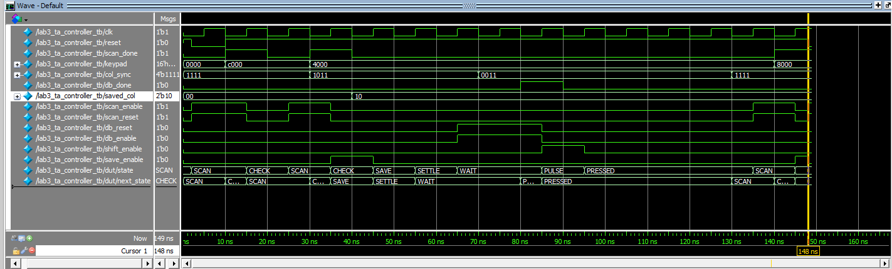
Top-Level Verification
Asynchronous Reset
Reset immediately returns the controller to SCAN and clears the saved key and both displayed digits.
Top-level reset waveform
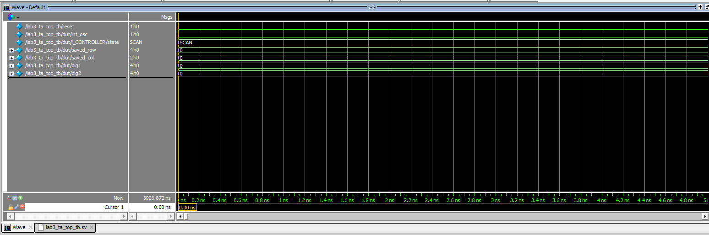
Test 1: Bounce, Debounce, and Single Registration
The first waveform shows a bounced press of key 1 while the keypad continues scanning. After the complete keypad map contains one valid key, the controller leaves SCAN for CHECK.
Test 1a waveform
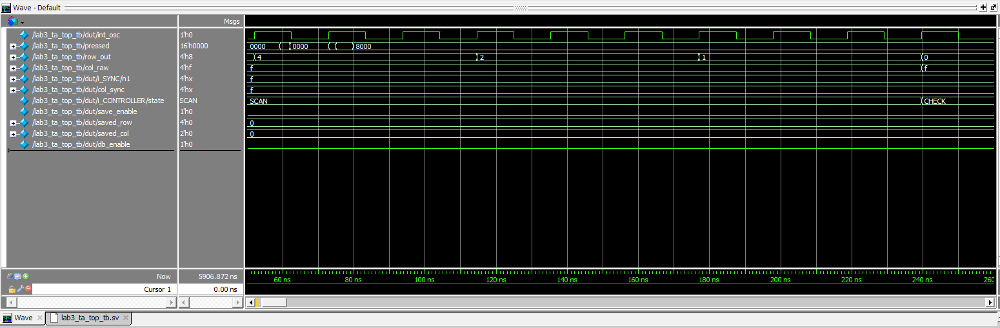
The second waveform shows the saved column settling through the synchronizer, the debounce counter reaching its terminal count, a one-cycle shift_enable pulse, and digit1 updating to 1. The controller then remains in PRESSED, preventing repeated registration while the key stays held.
Test 1b waveform
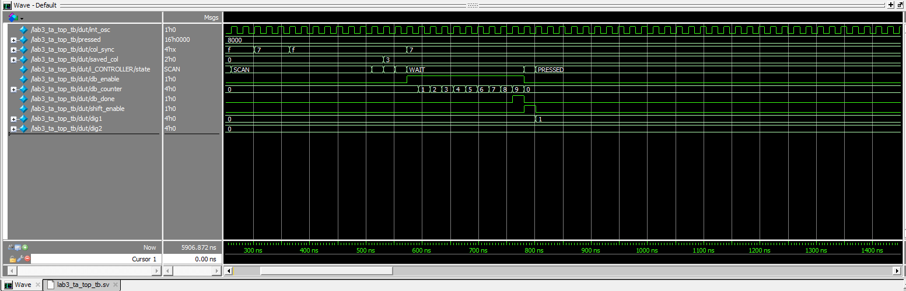
Test 2: Two-Digit History
A valid press of key 5 produces the normal controller sequence and shifts the display history from 1,0 to newest=5, previous=1.
Test 2 waveform
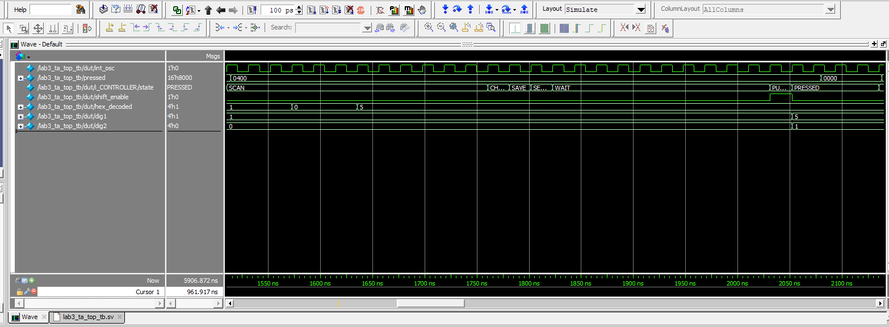
Test 3: First-Key Priority and Roll-Off
Key 2 registers first. Key 9 is then pressed while 2 remains held; the controller stays in PRESSED and the display remains unchanged. When 2 is released while 9 remains held, scanning resumes and 9 becomes the next valid key.
Test 3 waveform
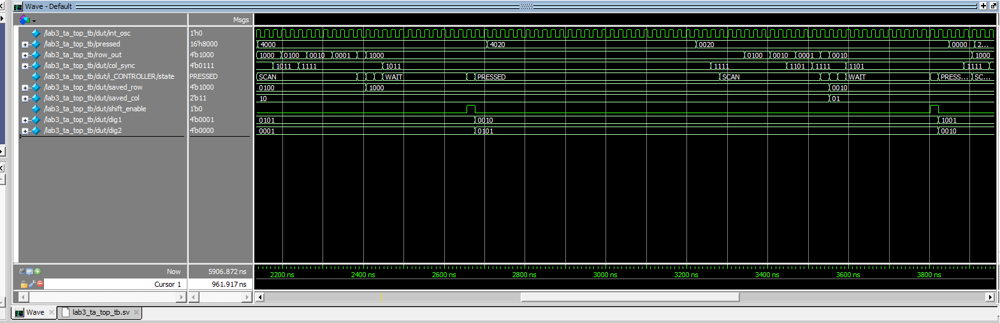
Tests 4 and 5: Simultaneous Multi-Key Input
Keys 3 and C are initially held together. The keypad map is not one-hot, so the controller continues scanning and the stored digits remain 9,2. After 3 is released, C is the only remaining key and is registered as the next digit.
Tests 4 and 5 waveform
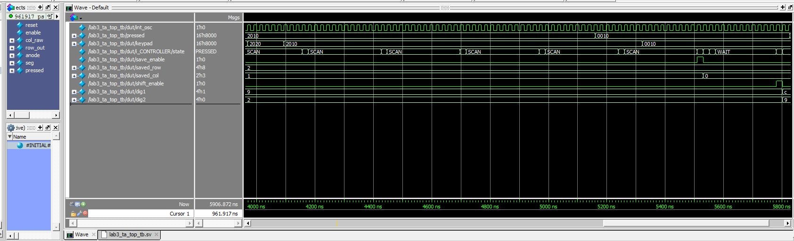
Display Multiplexing
The final output test verifies the top-level connection from the digit registers through the reused display multiplexer and hexadecimal decoder. The saved waveform shows the C phase with the corresponding anode and segment output; the automatic testbench also asserts the opposite phase for the stored 9.
Top-level display-multiplexing waveform
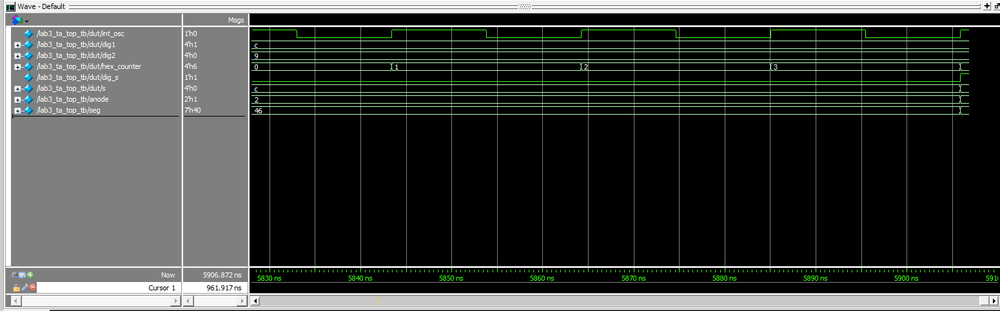
Synthesis Output
Radiant synthesis completes without latch or tri-state warnings in the committed synthesis message log.
Schematic
The Lab 3 hardware combines the keypad and dual-display circuits developed in Lab 2.
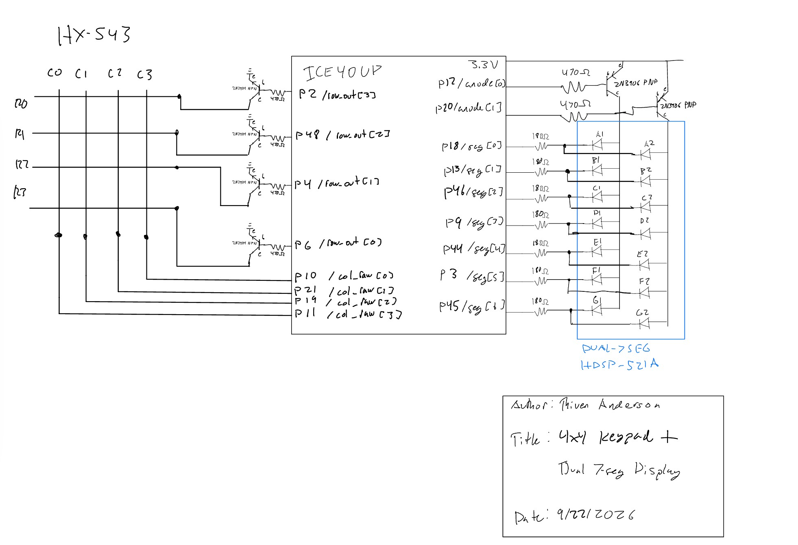
Block Diagrams
The top level diagram contains only instances of other modules and simple combinational logic.
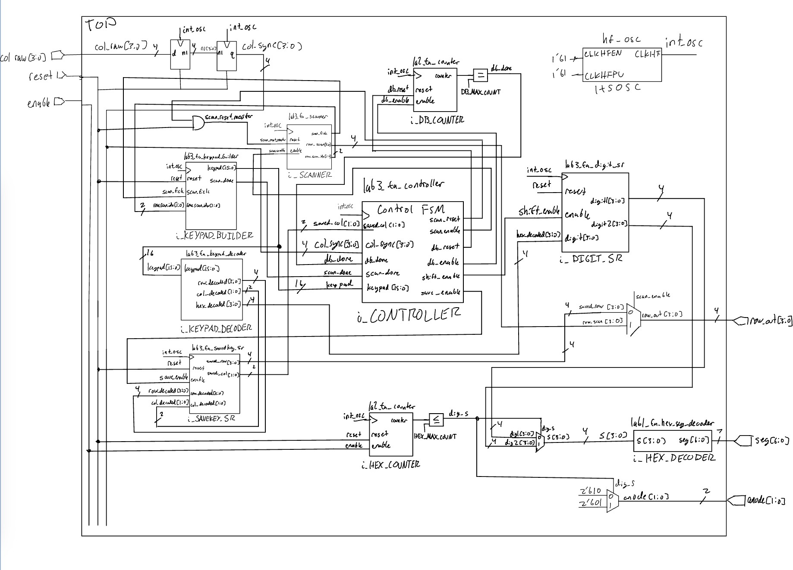
The scanning module block diagram is also included as it contains an instance of the counter module.
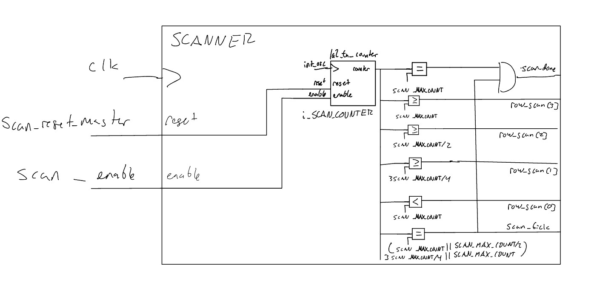
Requirements Verification
Automatic simulation verifies single-key operation, one-time registration, debounce behavior, two-digit history, first-key priority, rejection of simultaneous multi-key input, and registration of the final remaining key after multi-key roll-off. The display connection is also checked automatically.
The physical display behavior also meets all required specifications, proficient and excellent.
AI Prototype and Reflection
Using ChatGPT and the provided prompt the model succesfully produced HDL that compiled after only one error. This error was the same as lab 1 where the model used outdated syntax to instantiate the high-frequency oscillator.
Preliminary reviews of the code suggest that it would not succesfully handle excellency roll off specification, however, it has the base structure down and used a similar full-keypad sweep methodology. I believe this shows it can be a very useful tool that does not make syntax errors, but all code must be closely reviewed and very specific prompts must be given.AI Prototype Prompt SystemVerilog
// ============================================================ // Rate / clock-enable generator // Generates a one-system-clock-wide tick at approximately TICK_HZ. // ============================================================ module rate_tick #( parameter integer CLK_HZ = 20_000_000, parameter integer TICK_HZ = 200 )( input logic clk, input logic reset_n, output logic tick );
localparam integer DIV = CLK_HZ / TICK_HZ;
localparam integer WIDTH = $clog2(DIV);
logic [WIDTH-1:0] count;
always_ff @(posedge clk) begin
if (!reset_n) begin
count <= '0;
tick <= 1'b0;
end
else begin
tick <= 1'b0;
if (count == DIV-1) begin
count <= '0;
tick <= 1'b1;
end
else begin
count <= count + 1'b1;
end
end
endendmodule
// ============================================================ // 4x4 keypad scanner // // col_n : active-low column drive // row_n : active-low row inputs // // A column remains selected for an entire scan interval, so the // row signals have several milliseconds to settle before sampling. // // Once a key is detected: // SCAN -> WAIT_RELEASE // // WAIT_RELEASE continues scanning every column. A new key cannot // register until one complete 4-column sweep contains no presses. // ============================================================ module keypad_scanner_4x4 ( input logic clk, input logic reset_n, input logic scan_tick,
input logic [3:0] row_n,
output logic [3:0] col_n,
output logic key_valid,
output logic [3:0] key_code);
typedef enum logic {
SCAN,
WAIT_RELEASE
} state_t;
state_t state;
logic [1:0] col_idx;
// Synchronize external keypad row signals into FPGA clock domain.
logic [3:0] row_sync1;
logic [3:0] row_sync2;
logic release_sweep_active;
logic release_sweep_any;
// --------------------------------------------------------
// Input synchronizer
// --------------------------------------------------------
always_ff @(posedge clk) begin
if (!reset_n) begin
row_sync1 <= 4'b1111;
row_sync2 <= 4'b1111;
end
else begin
row_sync1 <= row_n;
row_sync2 <= row_sync1;
end
end
// --------------------------------------------------------
// Drive exactly one column low
// --------------------------------------------------------
always_comb begin
col_n = 4'b1111;
case (col_idx)
2'd0: col_n = 4'b1110;
2'd1: col_n = 4'b1101;
2'd2: col_n = 4'b1011;
2'd3: col_n = 4'b0111;
default: col_n = 4'b1111;
endcase
end
// --------------------------------------------------------
// Key lookup
//
// Example hexadecimal keypad layout:
//
// COL0 COL1 COL2 COL3
// ROW0 1 2 3 A
// ROW1 4 5 6 B
// ROW2 7 8 9 C
// ROW3 E 0 F D
//
// Change this function if the physical keypad is wired
// differently.
// --------------------------------------------------------
function automatic logic [3:0] decode_key(
input logic [1:0] column,
input logic [1:0] row
);
begin
case ({row, column})
4'b0000: decode_key = 4'h1;
4'b0001: decode_key = 4'h2;
4'b0010: decode_key = 4'h3;
4'b0011: decode_key = 4'hA;
4'b0100: decode_key = 4'h4;
4'b0101: decode_key = 4'h5;
4'b0110: decode_key = 4'h6;
4'b0111: decode_key = 4'hB;
4'b1000: decode_key = 4'h7;
4'b1001: decode_key = 4'h8;
4'b1010: decode_key = 4'h9;
4'b1011: decode_key = 4'hC;
4'b1100: decode_key = 4'hE;
4'b1101: decode_key = 4'h0;
4'b1110: decode_key = 4'hF;
4'b1111: decode_key = 4'hD;
default: decode_key = 4'h0;
endcase
end
endfunction
// --------------------------------------------------------
// Scanner / debounce FSM
// --------------------------------------------------------
always_ff @(posedge clk) begin
if (!reset_n) begin
state <= SCAN;
col_idx <= 2'd0;
key_code <= 4'h0;
key_valid <= 1'b0;
release_sweep_active <= 1'b0;
release_sweep_any <= 1'b0;
end
else begin
// key_valid is a one-clock pulse
key_valid <= 1'b0;
if (scan_tick) begin
case (state)
// ----------------------------------------
// Normal scanning
// ----------------------------------------
SCAN: begin
if (row_sync2 != 4'b1111) begin
// If multiple rows are active,
// choose the first one by priority.
if (!row_sync2[0])
key_code <= decode_key(col_idx, 2'd0);
else if (!row_sync2[1])
key_code <= decode_key(col_idx, 2'd1);
else if (!row_sync2[2])
key_code <= decode_key(col_idx, 2'd2);
else
key_code <= decode_key(col_idx, 2'd3);
key_valid <= 1'b1;
state <= WAIT_RELEASE;
// Do not accept a partial sweep as
// evidence of full release.
release_sweep_active <= 1'b0;
release_sweep_any <= 1'b0;
end
col_idx <= col_idx + 2'd1;
end
// ----------------------------------------
// Ignore all keys until a COMPLETE sweep
// sees every row inactive.
// ----------------------------------------
WAIT_RELEASE: begin
// Start release checking at column 0 so
// the release decision always represents
// a full four-column sweep.
if (col_idx == 2'd0) begin
release_sweep_active <= 1'b1;
release_sweep_any <=
(row_sync2 != 4'b1111);
end
else if (release_sweep_active) begin
if (row_sync2 != 4'b1111)
release_sweep_any <= 1'b1;
end
// Column 3 finishes a complete sweep.
if ((col_idx == 2'd3) &&
release_sweep_active) begin
// Include column 3 in the decision.
if (!release_sweep_any &&
(row_sync2 == 4'b1111)) begin
state <= SCAN;
end
release_sweep_active <= 1'b0;
release_sweep_any <= 1'b0;
end
col_idx <= col_idx + 2'd1;
end
default: begin
state <= SCAN;
end
endcase
end
end
endendmodule
// ============================================================ // Hex-to-seven-segment decoder // // Active-low segment outputs for a common-anode display. // seg_n = {a,b,c,d,e,f,g} // ============================================================ module hex7seg ( input logic [3:0] hex, output logic [6:0] seg_n );
always_comb begin
case (hex)
4'h0: seg_n = 7'b0000001;
4'h1: seg_n = 7'b1001111;
4'h2: seg_n = 7'b0010010;
4'h3: seg_n = 7'b0000110;
4'h4: seg_n = 7'b1001100;
4'h5: seg_n = 7'b0100100;
4'h6: seg_n = 7'b0100000;
4'h7: seg_n = 7'b0001111;
4'h8: seg_n = 7'b0000000;
4'h9: seg_n = 7'b0000100;
4'hA: seg_n = 7'b0001000;
4'hB: seg_n = 7'b1100000;
4'hC: seg_n = 7'b0110001;
4'hD: seg_n = 7'b1000010;
4'hE: seg_n = 7'b0110000;
4'hF: seg_n = 7'b0111000;
default: seg_n = 7'b1111111;
endcase
endendmodule
// ============================================================ // Dual seven-segment display multiplexer // // digit_n[0] = right / most-recent digit // digit_n[1] = left / older digit // // Active-low digit enables assumed. // // Each digit is active for exactly one refresh interval, giving // a 50% duty cycle and balanced brightness. // ============================================================ module dual7seg_mux ( input logic clk, input logic reset_n, input logic refresh_tick,
input logic [3:0] older_digit,
input logic [3:0] recent_digit,
output logic [6:0] seg_n,
output logic [1:0] digit_n);
logic digit_sel;
logic [3:0] selected_hex;
always_ff @(posedge clk) begin
if (!reset_n)
digit_sel <= 1'b0;
else if (refresh_tick)
digit_sel <= ~digit_sel;
end
// Right digit = most recent
// Left digit = older
always_comb begin
if (digit_sel == 1'b0) begin
selected_hex = recent_digit;
digit_n = 2'b10;
end
else begin
selected_hex = older_digit;
digit_n = 2'b01;
end
end
hex7seg decoder (
.hex (selected_hex),
.seg_n (seg_n)
);endmodule
// ============================================================ // Top level // // Uses the iCE40 high-frequency internal oscillator. // // CLKHF_DIV = “0b01” is commonly used to divide the native // HFOSC frequency. Adjust CLK_HZ below to match the oscillator // frequency used in the actual design / board configuration. // ============================================================ module keypad_display_top ( input logic reset_n,
input logic [3:0] keypad_row_n,
output logic [3:0] keypad_col_n,
output logic [6:0] seg_n,
output logic [1:0] digit_n);
// Approximate system-clock rate assumed by the tick dividers.
localparam integer CLK_HZ = 24_000_000;
logic clk;
logic scan_tick;
logic refresh_tick;
logic key_valid;
logic [3:0] key_code;
logic [3:0] older_digit;
logic [3:0] recent_digit;
// --------------------------------------------------------
// iCE40 UP5K internal high-frequency oscillator
// --------------------------------------------------------
HSOSC #(
.CLKHF_DIV(2'b01)
) hfosc_inst (
.CLKHFPU(1'b1),
.CLKHFEN(1'b1),
.CLKHF (clk)
);
// --------------------------------------------------------
// Keypad scan rate
//
// 200 column samples / second:
// 5 ms per column
// 20 ms per complete keypad sweep
// --------------------------------------------------------
rate_tick #(
.CLK_HZ (CLK_HZ),
.TICK_HZ(200)
) scan_rate (
.clk (clk),
.reset_n (reset_n),
.tick (scan_tick)
);
// --------------------------------------------------------
// Display refresh
//
// Toggle digit at 1 kHz.
// Each individual digit is therefore refreshed at 500 Hz,
// comfortably above the visible-flicker range.
// --------------------------------------------------------
rate_tick #(
.CLK_HZ (CLK_HZ),
.TICK_HZ(1000)
) display_rate (
.clk (clk),
.reset_n (reset_n),
.tick (refresh_tick)
);
// --------------------------------------------------------
// Keypad scanner
// --------------------------------------------------------
keypad_scanner_4x4 keypad_scanner (
.clk (clk),
.reset_n (reset_n),
.scan_tick (scan_tick),
.row_n (keypad_row_n),
.col_n (keypad_col_n),
.key_valid (key_valid),
.key_code (key_code)
);
// --------------------------------------------------------
// Two-key history
//
// Example:
// first press 5 -> [0][5]
// next press A -> [5][A]
// --------------------------------------------------------
always_ff @(posedge clk) begin
if (!reset_n) begin
older_digit <= 4'h0;
recent_digit <= 4'h0;
end
else if (key_valid) begin
older_digit <= recent_digit;
recent_digit <= key_code;
end
end
// --------------------------------------------------------
// Seven-segment multiplexer
// --------------------------------------------------------
dual7seg_mux display_mux (
.clk (clk),
.reset_n (reset_n),
.refresh_tick (refresh_tick),
.older_digit (older_digit),
.recent_digit (recent_digit),
.seg_n (seg_n),
.digit_n (digit_n)
);Time Spent
Total time spent on Lab 3: 25 hours